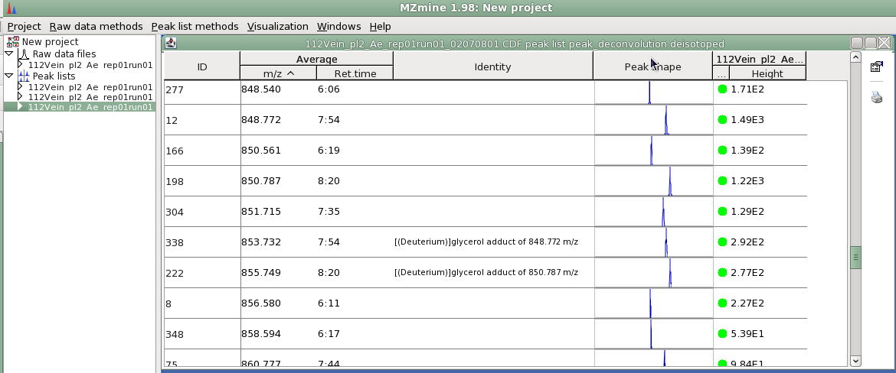
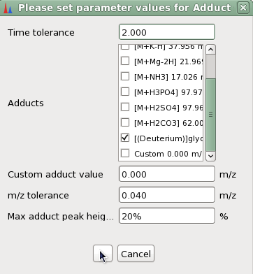

Adduct ion definition(in mass spectrometry)
An ion formed by interaction of two species, usually an ion and a molecule,
and often within the ion source, to form an ion containing all the constituent
atoms of one species as well as an additional atom or atoms.
This algorithm search for the adducts that are defined by the user in a single peak list.

Peak List showing two identified "Deuterium" adducts.
This aligner requires the next parameters:
"Time tolerance"
Maximum allowed difference of time to set a relationship between peaks.
"Adducts"
List of adducts, each one refers a specific distance in m/z axis between related peaks.
"Custom adduct value"
Specific distance in m/z axis between related peaks for custom adduct.
"M/Z tolerance"
Tolerance value of the m/z difference between peaks.
"Max adduct peak height"
Maximum height of the recognized adduct peak, relative to the main peak.
